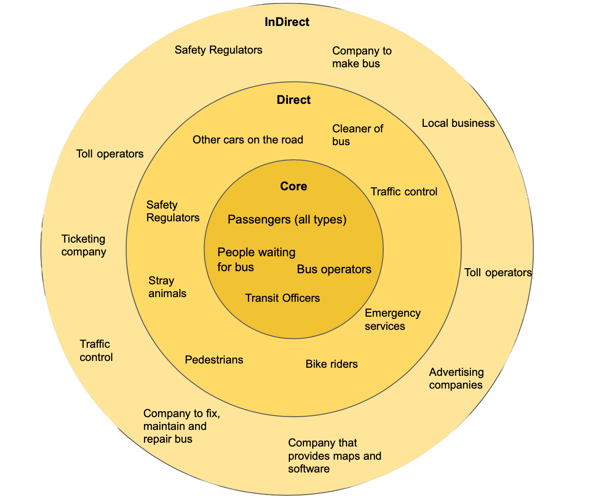

Process Journal

User Centred Design
User centred design is an essential part of creating a great user experience. It’s a user-driven framework that focuses on usability goals, personas and user workflows. This approach aims to put the end-user’s needs, wants, limitations and goals at the most important level, allowing for a iterative design process that addresses the whole user experience.
This week we explored approaches to design, examples of these were genius design, technology-driven design and user-centred design. As a software engineer I have been taught mostly with technology-driven design, exploring new innovations and how we can create software/systems around them. It was refreshing to have a new take on this. I feel I align more personally with user-centred design, it seems to have a more intimate relationship with its uses and naturally allows the products to become more human and inclusive.
We did a few practical exercises around sketching , helping us to better think, communicate and persuade. We explored drawing an object from different perspectives, allowing us to see that interpretation is a huge factor in design. Making sure you get the exact requirements from a brief or client is really important, otherwise you could end up designing something that really misses the mark.
We also explored what it means to iterate a design, trying variations or different use cases. We did this via drawing a button and combined this with different behaviours, physical attributes, usability, features and purposes. While this exercise was incredibly simple, it helped me to understand the complexities that into design. A quote from Martin Van Lupin described this well “Design is more complex than mathematics”, and I totally agree with him.
We then moved onto looking at the design process. How it involves many micro process like analysing and prototyping, and also the range of design concepts like constraints and conceptual models. These design concepts were a stand out of the week. I really liked playing with how to bring great affordance into design, something that we take for granted everyday.
Reframing is another key concept it was refreshing to look into. We did this in two different ways, first incremental and second iterative. Incremental was about exploring different branches to a project and building it up in blocks, compared to iterative which looked at building the whole project up in stages, with each new stage building upon the previous. I align more with the iterative approach, I can see this being a better solution for making sure the user experience is at the core of the process.

Using all these areas of user centred design we design a microwave for kids. This was a difficult task as I really wanted to bring together the concepts we had learnt and not jump straight into designing based on my own bias and assumptions. After a few failed attempts I was able to come up with an idea that wasn’t actually about the microwave, instead a tool to help kids understand how long to cook food for, that’s both an audio and visual experience and provides a quick easy way to parents to clean it up.
Group Project
This week we took a deep dive into what area of autonomous vehicles we wanted to do our research in. We came up with a list of ideas, here is a sample:
- Autonomous vehicle to drive kids to/from school or from activity to activity
- Drone to be first response to 000 calls
- Agriculture Data provision service model
- Food and beverage drive round delivery
- Drones for cleaning high rise buildings windows
- Drone to check for speeding cars, people using phones
We decided to go with the top idea, a vehicle to help drive kids from A to B. We all have a passion for finding ways to improve the world around us for youth so this was a great fit. We will spend the next week researching the topic.
Interaction Design
This week started with a introduction into how the world around us can be transformed into a robot city. This idea was a little bizarre and futuristic initially, but once unpacked it seemed to be a possible reality in the not to far distance. We have seen a few big revolutions starting with the industrial revolution in 1784, the idea of cyber-physical systems (robots, AI, VR and AR) could be a fit big change. We are already starting to see a glimpse of this with autonomous vehicles, delivery robots and drones.
There are a few challenges with this idea, for example we would need to movie into a space were interaction design is between multiple users and not just a screen. It also involves us to think of robots more like infrastructure, a concept that is still very foreign. Risk management is a huge factor we would need to design for. For example what happens if a drone falls out of the sky and hits someone? Or who is responsible if two autonomous cars crash into each other and cause harm?
While these are big problems to solve we can bring them down as smaller problems, and use a design process to bring them all together. Last week we were introduced into design process but this week we took a deep dive into this area. We explored the various stages and looked at the Bill Buxton diagram for sketching user experiences.
The main takeaways were that we start the process with elaboration (or diverging) and come to a point where we start to reduce (or converge) our ideas into a singular (or set of focused) design. It was also brought to our attention to think about designing in this process a little differently. To initially think about designing the right things (discover, define), then to focus on designing things right (developer, deliver).
Unpacking the brief was another focus for this week. This included stakeholder mapping and defining the target audience. Stakeholder mapping is really important to visually consolidate and communicate the key actors in a design project, and essentially who we will be designing for. We then use this map to define our target audience, this will also be the group we will focus our research on.
Group Project
This week we created two assets, a stakeholder map and a list of target users. We started by creating the stakeholder map. At first this seemed like an easy task, however once we ventured to the outer circles (direct and indirect) the lines between who could be effected by our project were getting a little blurred. In the end we came up with 4 core stakeholders, 3 direct and 9 indirect.
The core users formed our target audience for the research. To get more specific we wrote down attributes, to help see are there different types within each audience group.
Here is an example of Passenger:
- Parents with prams (single or double)
- Frequent travellers
- Tourists
- Single or group
- Students, concession
- People going to work
- People traveling on weekend
- Disabled
- Shoppers
- No english (ESL)
- Family
- Pregnant
- Pay via cash or through app
- Running super late
- Unexpected user
- Somehow is lost
For clarity we identified why we were included each of these groups. For example a passenger are the users that are choosing to use the service, hence have a direct and obvious relationship to the product, they are the primary users.
User Research
his week we explored how user research is the systematic approach to understand people’s behaviours and needs. For most of the products we are building, we are not the user so we have to make sure the research we do is valid, reliable and actionable. There are a few clear goals we need to achieve when doing user research:
- Establish clear goals and research questions
- Learn about the domain and review past research
- Choose and design the appropriate research method(s)
- Decide on appropriate sampling and recruit participants
- Field the designed research and collect sufficient data
- Analyse the collected data thoroughly and summarise
- Extract insights and conclude recommendations
During this process a couple of key points stood out:
- When learning about the domain make sure to look into the current state to understand what is the situation today
- When choosing a research approach consider these three things, the stage of the project, the accuracy the results need to be and what specific research questions are there
- Research methods can be defined as either attitudinal vs behavioural and qualitative vs quantitative
- Choosing the right sample of the target audience is incredibly important, if not done correctly it can void the research
Group Project
This week we took our target audience and focused on how we can do research with this group. We designed 5 research questions and explored various research methods across the self-report, observation, few and many grid plane.
The research questions we designed were aim to test a range of areas from what the current state looks like to a uses frustrations and observations. We also developed complimentary questions to look into once we start the research.
- What are the hardest challenges of getting kids from A to B?
- What kind and level of supervision is needed for different age groups?
- What information does the requester provide?
- What makes a ride enjoyable for kids?
- What works well for current ride sharing users?
The research methods we decided to explore were interviews, surveys, contextual observation and contextual inquiry. I was tasked with looking into reframing, interviews, questionnaires and contextual observation.
Here are some slides from my report that talk to this research


Internet of Things
The internet of things (or IoT) is an interesting new form of technology, a core of having technology connected to the internet. This allows everyday objects (lights, fridge, tv etc) to appear smart and more capable. In a simple sense, the IoT is a physical thing added with a sensor, controller or actuator added with the internet or network.
There are many examples of this currently today, our fridges can now order items directly from Amazon to our house and we have speakers that can use AI assistants to help us with everyday questions and simple tasks (like setting a timer). While this can seem like a good idea, there are a lot of examples where actually this is terrible and simply making a device connected to the internet is a terrible idea.
Designing for IoT devices requires a slight difference in how we think about user experience. It involves considering things like service and platform design and productisation and interusability. To help with this, designing for IoT is often coupled with design fiction. Joshua Tanebaum explained this as to use narrative elements to envision and explain possible futures.
We did a practical exercise to reimagine everyday items in our morning routine. We started by drawing them out, anthropomorphising them and eventually acting them out to our group. This was a great way to see how making an object more human can allow you to connect with it in a different way, seeing goals, frustrations and solutions it could provide (even outside it’s original propose).
Group Project
This week we directly mapped the practical exercises to our group project. This helped us to humanise the objects in our project and see things from their perspective. We took these exercises further, adding complexities like latency, systems out of sync and proximity constraints. It was a really challenging to push our ideas to extreme cases and see how it would handle, or even if it could handle these. Latency was the most interesting case to have as a constraint as it is very likely but something we assume wont be an issue.
We looked into what connected devices our project and identified that we had 8 potential devices we could design for. The main ones were a mobile phone, the vehicle, watch or tablet, however it was interesting to note that other not so obvious objects were to consider, such as traffic lights or school signs.
This week I also spent time going though my research to begin the process of synthesizing. This involved me combing together all the results of the research. I started by creating an affinity diagram to collect the findings from the interviews. These results help to shape the two personas Jessie and Sam. I used two different techniques to represent these. Jessie’s typical journey were shown as a storyboard, while Sam’s took the form of a user journey. This process of creating personas and visually representing them allowed me to understand the research on a deeper level.
Here are a couple of the key points from my summary:
- There is a need to improve the options and quality of transport Younger and older children have very different needs
- Human connection is generally valued higher than convenience The solution must fit into the parent’s current routine
- The requestors must feel like they are in control of the service
- The solution must be able to adapt for unexpected changes
- Parents initially have a deep emotional connection to leaving their kids at school
Wireframing
This week we learnt about wireframing, a simple quick way to communicate your ideas and start producing the start to a user interface. There are a scale of fidelity you can wireframe in (low to hight), ultimately this should be a decision made by the designer to whatever is the best fit for the audience, purpose and constraints of the project. Hand drawn wireframes are often great when exploring ideas (diverging), while digital wireframes are better for when designing for details (converging).
Wireframes should be designed to match user stories. These are structures use cases of the system and often constructed as “As an x I want to y, so that I can z”. When designing them, we were also reminded of a few good practices. These include numbering the flow, adding notes and using colours to seperate thoughts, features or functionality. This helps to ensure the designs are understandable for someone else, not just yourself.
We spent some time to practices techniques of creating wireframes. Starting off by creating a storyboard, and using the scenes where the user is interacting with a UI to draw some wireframes. We did this in a rapid style, creating many versions and over time reducing the ideas as we add more detail.
It was great to get feedback from colleagues during this process as we could get instant feedback on what we could change or what we should explore more. We also quickly put together a client pitch to help us understand how to convey these ideas to someone with limited design skills and a different agenda to us.
Group Project
This week we went over all of our research findings. We spent time talking about our core findings, things we wanted to research more and potential avenues we could explore in our first user interface sketches. Here are some of the key findings:
The other topics we focus on was deciding what two ideas we should design for. We knew we wanted to do this in our chosen area of autonomous vehicles for transporting children, however our research was open to many possibilities. Some examples we thought about were a bus service, private uber like car, car sharing service amongst friends and requestor service for older kids. With support of the teaching staff we decided to design two interfaces around a similar storyboard, just from a difference perspective.
- Requestor app: This is the interface used by a parent/guardian to book and manage a trip for their child(ren).
- Passenger app: This is the interface used by the child(ren) on the trip to communicate, be entertained and see the trip details.
We spoke about the target audience of these ideas. Using the exercise from previous week we landed on this service for busy families with both secondary and primary school kids.
Design Patterns
This week we learnt about design patterns and the topics surrounding this area. A design pattern is the sibling of two other important concepts, design principals and best practice.
Design Principals: are basic assumptions within the community that have been accepted as true.
Best Practices: are the how to’s and the do’s and don’ts when designing and are often included within a design pattern.
Design Patterns: give guidance for how to solve a specific design problem, these are often in the form of rules you should follow.
It would brought to our attention that people often get components and design patterns confused (as they can appear to be very similar). The best definition of how to distinguish between the two is that components are a complete solution, where as design patterns is a rule that can be customised to solve a general problem.
To practice these skills, we were taught about usability testing. With this being a broad topic, we explore various things to test (like specific tasks to navigation and clear labels). We ran through a few examples of a horizontal prototype (testing functionality). These activities were fun, really hands on and allowed for a us to see how valuable they are in getting feedback on designs.
Group Project
This week we created a basic storyboard for one of our prototype ideas and used this to create a couple of paper prototypes. As a group we decided to explore the booking a trip option as a requestor would be a great place to start since it was the most common task. We first created a template phone frame to hold the prototypes then created various screens to swap into the frame. We used tracing paper to build up features as it was a quick way to change the layouts without having to redraw parts of the interface.
This week we created a mind map of both prototype ideas. It was a great way to see the common tasks and potential screens we could need, and also their workflows.
We found a couple of things challenging during this. Firstly it was hard to decide on consistent elements without having testing them. For example, our home screen was going to be used in all of the paper prototypes, and we hadn’t decided on what this should look like (and had many versions drawn).
Another challenge was working out a specific flow of screens and how much detail to show in each prototype. Since each task could go off on many tangents, we decided to strip away any non essential features and stick to the core functionality. This made it a lot easier to stay focused and make sure the basic steps of doing a task could be tested.
Prototyping Interactions
Prototyping is a really important tool we should use a designers to get feedback and interact through user feedback. This week we explore how we can prototype interactions, this could look like a simple paper prototype, to more involved room mockups of how the physical space would look like. By prototyping we make an idea tangible, it allows us to express our idea as a physical object that users can play with and give us feedback on in real time, often in context.
IDEO Moto has a great quote to illustrate the importance of this “If a picture is worth 1000 words, a prototype is worth 1000 meetings”. Prototyping also helps us determine if people understand how to use the product we have designed. This taps into the conceptual model of the product and if it matches the users mental model. We took some time to experience with various workflows, from Sketch, InVision and Framer. There are so many so it was great to see which one works for me, and for the group project.
Group Project
Using the storyboard from last week we extended this and created a more detailed version. We essentially upgraded our 6 scene version to a 12 scene story. This allowed us to explore more interactions with the interface and also a closer look at how it would fit into the users environment. We also created a story board for our second prototype idea, the passenger app.
Before creating these storyboards we found it helpful to write up a draft script of how it could look like. By doing this first we could ensure the core functionality of the app was covered in a way that was natural and didn’t push any features we wanted to design for.
We used the mind maps created from last week to divide up the screens to create. I was tasked with creating screens for 4 scenarios. I really enjoyed this as it was fun to create many iterations and see how they improve each time. I found it helpful to use a phone template I found online as a frame to draw my sketches as I could draw the interfaces in context.
To assess if my sketches made sense I ran them through with a friend. This was a very informal usability tests that involved me asking simple questions like “what do you think happens here” and “can you see where to change this option”. I found this helpful to make sure my designs made sense to someone outside of the project before sharing them with the group. Luckily they were clear and didn’t cause my friend to get lost or confused about what the interfaces were trying to do.
Advanced Prototyping and Motion
This week we extended on what we did last week — prototyping. We looked into animations, sound, motions, transitions and advanced visuals. These techniques are an impressive way to convey emotion, flow and a more realistic version of what the final product would feel like. I aligned most with motions and transitions. These are a cheap way to introduce simple animations that can bring the prototype to life, especially if they are coupled with gestures (for example how a user can swipe between pages).
We took a deeper dive into Framer. This app allows you to write pseudo code to mimic animations, function and interactions. Personally I think it’s easier to use InVision so will be using this for the next round of prototyping in the group project. Another area we learnt about was the importance of prototype motion. This is the idea of treating the prototype as an experience, rather than individual separate screens.
This motion can be in the form of a general flow, or micro animations like animating posting a new article. When using motion it’s crucial to keep track of a few key ideas. The first using either real-time or non real-time interactions. Secondly is ensuring you include feedforward and provide the user with feedback. Third is about dimensionality, giving spacial awareness of the physical space. And last is designed a choreographed motion, ensuring the overall harmony of movement works as one experience.
Group Project
This week we revised our sketches from the past week and gave each other feedback. We all approached the designs from a slightly different angle so it was interesting to see the various perspectives. After discussion it was decided that I would summarise what we discussed into a new iteration of the prototypes we would take to the first usability testing.
I spent about half a day going through everyones sketches and making designs we would be using for testing. I downloaded a larger mobile and tablet framework to draw these in and once completely scanned them into POP iPhone app. This was the tool we decided on using for the usability testing. It is an easy to use app that allows for very basic animations that give enough functionality to demo a simple sample of how the app could function.
One of the other group members and myself took the POP prototype and tested this with 6 participants for the requestor idea and 6 participants for the passenger idea. These tests spread over two days and took about 2 hours each day. During each test we asked for their thoughts and allowed them to share feedback on how they understood the app, what worked well and what areas they were confused about. We received some great insights, some we were not expecting but will make for a better interface in the next iteration.
Usability Evaluation
Usability evaluations are a crucial way to get feedback on designs, at any stage of the process. This is most useful during the reduction phase, when converging designs. We can see which of these designs are working well and where to focus our attention. Reflecting on previous weeks, the user should always be at the core, and this evaluation technique helps to ensure this.
Gilbert Cockton described what usability evaluation is well, “Put simply, usability evaluation assesses the extent to which an interactive system is easy and pleasant to use”. We used this extensively for our group project and I can say I found it very helpful. The week’s content was a great reminder of how powerful this technique can be in collecting relevant and useable feedback.
Group Project
During this week we spent time iterating the paper prototypes into digital prototypes. We discussed a series of learns from our first usability testing. A couple of key learns were around making buttons more obvious, price was really important to see throughout the booking process and the customise options needed more clarity. The other group members spent time creating screens from these learns as a prototype we can use in InVision.
As a group we went over the new screens and combined them into a more cohesive set. There were a couple of design decisions we had to work through, one of the more difficult ones was about the home page. We each had an interpretation on what this should look like, including it’s affordances. Relating back to our research and new findings from the testing, we decided to move ahead with a map focused UI that changed when the context of the app changed. For example, if there was no trip occurring it would show a map with the autonomous vehicles near by, when there is a trip occurring it would show that trip’s details on the map.
Once the digital prototype was completed, we went back into testing. I tested the app using InVision on my iPhone. This process was very smooth, and a little cleaner then using POP as InVision’s tools are more comprehensive, providing more flexibility (for example by including gestures as an interaction).
I also spent time writing up the text for the report. I found this a difficult task as there was so much content to cover. I started with creating a structure of the report, this was great to have a birdseye view and a good starting point.
Web Technologies
This week we were exposed to the vast landscape of web technologies. This environment is heavily diluted by languages, frameworks, libraries and processes. We explored these topics in the context of what was current, according to the stack overflow report. It was interesting to see what developers are using at the moment, what is becoming more popular and what is being phased out. What stood out to me was the importance of learning React, mastering Javascript as much as possible as well as HTML and CSS.
The content inspire me to not be afraid of being both a designer and developer. For example there are many great prototyping tools that are code based, and without a development background these can be overwhelming. It also appears that industry wants designers that can see from both perspectives. Allowing them to build systems that are designed for both end-user and developer, ideally streamlining the entire build process.
Group Project
This week was very full on as we were pressed with time to finish the report. Before the report could be finalised we had to discuss the findings from the digital prototype. We did this early in the week so we had time to pull everything together for the report. The findings we had from the testing we all similar, essentially around making customise more clear and include availability in the booking process and adding more information to the home screen when a trip is active.
Most of the week was then spent on completing the report. We developed a workflow that help us streamline the amount of work to complete. I would start by writing the text, another group member would then add to this by annotating over the designs and edit my text for updates or remove errors, followed by the other group member taking our content and transforming it into a visual report.
As a group we also started have initial discussions around how we can approach the high fidelity design and create a video walkthrough. We agreed to use a similar workflow where we each iterate the designs in stages. I’ll be doing the final iteration and creating the prototype. I’m excited to start this as this is when we will see the designs come to life with colour and typography.
Autonomy and AI
What would the word look like if it was powered by AI and robots? This is what we dived into this week. Autonomous vehicles are on the rise, starting off with simple iterations like drones. As these are becoming more commercially available it is opening up ideas for what else can be made autonomous. The example of a garbage bin was used, this details well how we need to shift the thinking of autonomy and AI to objects.
The principal thinking behind using AI was presenting. This was the first time AI in the form of an engineering field was structure, so I found it very useful. There are essential three parts:
- Autonomy: the object can do things on its own
- Agency: the object decides what it does
- Assurance: the object does the task properly
It’s also important to think about the objects state and what that means. Referring back to the bin example, does the bin want to be full or empty? How should it feel in either state? This was an interesting proposition to think about for our group project. What are the states for our system, what state does it want to stay in and why? This has helped me to structure my thoughts around being autonomy to a system, defining it’s purpose and if it’s even needed.
Group Project
This week we spent creating our high fidelity designs. We decided to go through three iterations, so each team member has a chance to design but also to ensure we have difference perspectives on the design. I was tasked with the final interaction that will be submitted and used in the video.
The iteration we finalised as a group later on in the week was a really good base. There were a few minor design decisions to make, along with making sure the colours had a consistent feel. To achieve this I updated the map design and blue accent line indicating the trip route. I references back to what our prior usability testing told us when making decisions and also what a good practice from other apps and design frameworks.
As I was pressed with time, I wasn’t able to fully explore all options I wanted to for particular areas. For example the active trip (or monitor trip) screen still doesn’t feel finished. The overlays, colours and general style I think could be improved. There was three iterations playing with different layouts, however still feel there is more to do. With more time I would have liked to design the other areas of the app. The sign up process would have been interesting as our wireframes had a layout that was unique to the normal process.